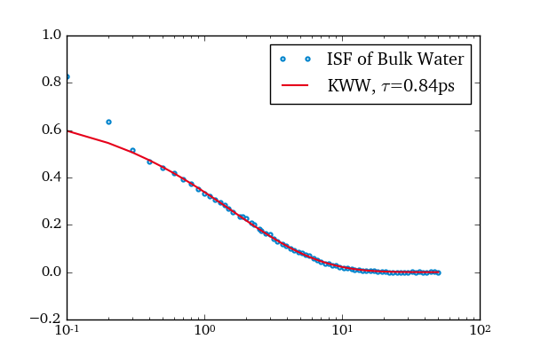

Calculating the ISF of Water¶
In this example the ISF of water oxygens is calculated for a bulk simulation. Additionally a KWW function is fitted to the results.
Out:
Loading topology: /data/niels/sim/water/bulk/260K/topol.tpr
Loading trajectory: /data/niels/sim/water/bulk/260K/out/traj_full_water1000bulk260.xtc
from functools import partial
import matplotlib.pyplot as plt
from scipy.optimize import curve_fit
import mdevaluate as md
import tudplot
OW = md.open('/data/niels/sim/water/bulk/260K', trajectory='out/*.xtc').subset(atom_name='OW')
t, S = md.correlation.shifted_correlation(
partial(md.correlation.isf, q=22.7),
OW,
average=True
)
# Only include data-points of the alpha-relaxation for the fit
mask = t > 3e-1
fit, cov = curve_fit(md.functions.kww, t[mask], S[mask])
tau = md.functions.kww_1e(*fit)
tudplot.activate()
plt.figure()
plt.plot(t, S, '.', label='ISF of Bulk Water')
plt.plot(t, md.functions.kww(t, *fit), '-', label=r'KWW, $\tau$={:.2f}ps'.format(tau))
plt.xscale('log')
plt.legend()
Total running time of the script: (0 minutes 0.906 seconds)
Download Python source code:
plot_isf.py
Download IPython notebook:
plot_isf.ipynb